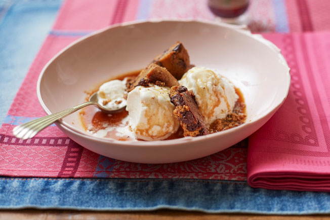

Cookies com Sorvete e Café

Acabaram as desculpas para não ter uma sobremesa legal nos dias de jantar especial.
Se você consegue assar cookies (já conferiu nossa receita para cookies perfeitos?) e coar um café, essa pode virar sua sobremesa oficial.
Experimente servir no prato fundo!
Ingredientes:
- 3 cookies com gotas de chocolate
- 16 bolas de sorvete de baunilha (ou leite)
- pó de café
- água filtrada
Passo a passo:
- Preencha a base da cafeteira italiana com água, até o nível da válvula de segurança. Você pode ver a válvula na parede interna da base da cafeteira, ela parece um botão. Preencha completamente o filtro com o pó de café. Atenção: coloque o pó às colheradas, sem compactar.
- Encaixe a parte superior da cafeteira e rosqueie até que feche bem. Para o café não queimar ao entrar em contato com a jarra quente, coloque 1 colher (sopa) de água filtrada na parte superior da cafeteira.
- Leve a cafeteira ao fogo baixo. Assim que todo o café passar para a parte superior da cafeteira, cerca de 5 minutos, desligue o fogo.
- Para a montagem da sobremesa: coloque 2 bolas de sorvete em cada prato fundo (ou tigela), quebre 1 cookie em pedaços grandes e disponha entre as bolas de sorvete, despeje delicadamente 1 dose de café (cerca de ¼ de xícara) e sirva a seguir.